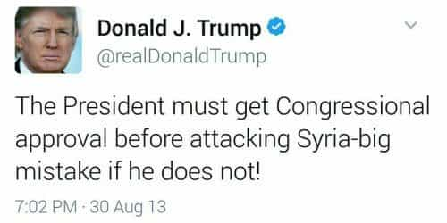
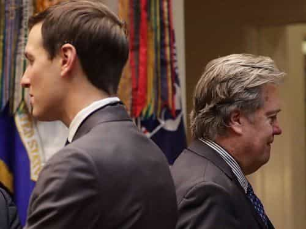

Corey is an iconoclast and the author of 'Man's Fight for Existence'. He believes that the key to life is for men to honour their primal nature. Visit his new website at primalexistence.com


With the US strike against Syrian airbase last week, there are endless speculations on what’s happening and what more is to come in the near future. At the moment, the biggest concern is whether the US will escalate their military involvement in an effort to overthrow Assad or not, risking a confrontation with Russia that could spark a major war.
With so much confusion and misunderstanding of what’s happening, I decided to compile number of facts to allow the readers to better understand the situation and the implications of Trump’s decision.

First, you’ll never get to the truth if you think this attack was merely a response to an alleged chemical attack, or if you think this is an issue of whether the US should get involved in another Middle East conflict or not. This is only a single episode in a long process the US and its allies have been taking to destroy stable Arab states for Israel while containing and trying to defeat Russia and its allies. Expansion of NATO to the East; Installation of missile defense system in Europe; CIA coup in Ukraine that knocked out a pro-Russian government while almost cutting off Russia’s naval access to the Black Sea, and therefore, the Mediterranean (which is why Russia took Crimea); sanctions against Russia; sanctions against Iran (Russia’s main ally and the main enemy of Israel and Saudi Arabia); and the attempt to destroy Syria, which is another ally of Russia that provides them with a naval base in the Mediterranean; the recent build up of NATO military presence in Eastern Europe; and so on, are all connected.
We are in the midst of a globalist war efforts against Russia and its allies. And it is with this context in mind that we should view the situation in the Middle East and elsewhere.
We should also remind ourselves that Syria was already chosen for destruction a decade ago. So, whether it is a step towards defeating Iran and Russia or simply doing the bids of Israel, it is clear that the US and its NATO and Middle Eastern allies will oppose Assad’s Syria no matter what even if it means supporting Islamic militants there who are the progeny of Al-Qaeda. With this view, it becomes clear that the decision to attack the Syrian airbase was not some moral decision made by Trump himself or an issue of showing off America’s strength, but a mere continuation of the neocon program that’s been going on for many years.

The picture of the boy on the left was circulated all around the world by the MSM to get people outraged against Assad. The boy on the right was ignored because the Jihadists who dragged him out of a hospital to behead him were the “moderate” rebels (AKA the good guys).
Continuing on with the first point, part of seeing at the bigger picture is to understand the bias and the psy-op the Western governments and the mainstream media has been engaging in to manipulate public opinion.
I’m appalled that people from the West from both the Left and the Right seem completely unfazed that their governments are giving diplomatic and military support to Al-Queda affiliated Jihadist groups in Syria. The same individuals who get outraged over some knife attack seem to have no shame that their nation is complicit in supporting Islamic militants who engage in beheadings and suicide bombings in Syria. This ignorance can be attributed to the work of the mainstream media that constantly shows Assad as the butcher who constantly kills children while the rebels are freedom fighters who just want peace and democracy. This war cannot, and should not, be judged by what the MSM tells us.
Nobody in the West sheds crocodile tears over the atrocities against civilians if the moderate beheaders do it.
There are many people defending Trump’s decision to launch the attack on the basis that the US needs to show it will not tolerate Assad gassing his own people. There are two problems with this.
First, there is no evidence that Assad attacked civilians with sarin gas. And considering the West was just starting to accept Assad’s stay in power and that Syrian government forces are on their path to victory, it makes no logical sense for Assad to start using chemical weapons to incur the ire of the international community. The more likely scenario is that the Syrian airforce targeted a weapons storage depot without knowing that the Jihadists were stockpiling sarin gas there. There’s even a possibility that the Jihadists killed their own civilians to troll the US into the war (the doctor who reported the sarin gas attack is a Jihadist), which is exactly what they did back in 2013 according to this UN inspector. All in all, it’s too soon to jump to conclusions, but obviously at least one person thought he had enough information to take immediate action.

When will president Trump do anything to save the Yemeni children who are being bombed and facing mass starvation? Oh wait, America is helping the Saudis slaughter them. Never mind.
Second, it’s impossible to believe that the West is concerned about civilian lives considering how they selectively choose which civilians to defend. Poor children? There was no outrage when the “rebels” killed children by shelling their school in Aleppo; the US didn’t launch Tomahawk missiles towards Saudi airbase when they bombed a Yemeni funeral that killed more than 100 people (if anything, the US is bombing Yemen and helping the Saudis with their starvation strategy), and there was no condemnation from the West when the “moderate” rebels killed 31 people in Damascus with suicide bombings just few weeks ago.
The issue isn’t even about chemical weapons either as another rebel group admitted to using them against the Kurds without incurring any sort of response from the West that pretends to hold a moral high ground. The entire notion that Trump or anyone else in the West cares about the poor children suffering the hands of evil Assadists would be laughable if it wasn’t so serious.
Since this is clearly not an issue of preventing civilian deaths or stopping the use of chemical weapons, it can only be concluded that the US and the rest of the West is only interested in destroying the Syrian nation just for the crime of being a stable and strong Arab state that won’t bow to globalists and Zionists.
Assad visiting a church. Of course, in the midst of all the propaganda about sectarian violence in Syria, there is no mention in the Western media about how Assad is the only one who protects all religious and ethnic minorities within Syria.
There are people who insist that any and all action is necessary to stop Assad from killing his own people, but is it true that he is a genocidal maniac? Before all else, we must understand that this is a civil war, and civil wars usually have a much higher civilian deaths from collateral damages than other types of wars. The US, more than anyone else, should know how difficult it is to prevent civilian casualties since they’ve killed hundreds of thousands of civilians in Afghanistan, Pakistan, Iraq, and Yemen.
Heck, just few weeks ago, an American airstrike killed 200 civilians in Mosul. In comparison, as the battle for Aleppo was coming to a close, the Syrian government forces allowed the Jihadists and their family to evacuate safely instead of finishing them off. There’s no reason to believe that Assad deliberately kills civilians like the so-called rebels like to do. So, if Assad is a butcher, then so is America and the terrorists they support, and tens time more so.
When the West is joining forces with Islamic terrorists to destroy your country, you have no one else to turn to but your leader.
Besides, if Assad is so horrible, why is it that the overwhelming majority of Syrians support him? Even a NATO study few years ago revealed that Syrians’ support for their president saw a sharp increase with the war at 70% while only 10% supported the rebels. This is because the people of Syria know that the only other alternative to Assad is the complete destruction of their country and watching Islamic extremists takeover their lands.
Note how the ISIS force that launched the attack were the ones closest to the bombed airbase.
It should be noted that the airbase that was bombed by Trump was specifically the one fighting against ISIS. Without missing a beat, the ISIS troops in the same area launched an offensive even before the smoke from the Tomahawk missiles started to clear.
Also, the strike on Syrian airbase was also not the first time the US targeted Syrian government forces. Last September, American airforce bombed 62 Syrian soldiers to death in Deir ez-Zor in an apparent “error,” allowing ISIS to later launch an offensive that would split the besieged city in half. Would the US ever tolerate such “error” if it was done by Iran or North Korea?
Jihadists celebrating the bombing of Syrian airbase the next day.
It’s quite telling who celebrated the bombing of the Syrian airbase: the Neocons, Democrats like Hillary and Nancy Pelosi, other globalist leaders like Merkel and Hollande, autocratic Sunni states like Turkey and Saudi Arabia, and of course, the various Islamist factions within Syria. And along with the globalists and the Jihadists, no one is happier than Netanyahu who’s been calling for the US to do more to destroy Syria and Iran for Israel’s own interests. It should be noted that this is the same Israel that’s been helping out the Islamic militants fighting in Syria. Yes, the country that’s been crying about being a victim of Islamic terrorism for decades is now supporting them in Syria.

The US government and its military lost all credibility when they lied about WMD prior to the invasion of Iraq. Knowing this, it seems that they have now adopted a new approach to military actions by bombing first and justifying it later (or not). They know that spending too much time trying to get the public on their side will only lead to growing opposition, so it appears they have decided to take swift action while the supposed chemical attack was still fresh in people’s minds. And unlike Obama who at least sought the approval of Congress back in 2013, Trump ordered the attack without any approval, making his action illegal. All American citizens should be concerned that their government can decide to start a major war at will without their consent.

Just before the missile strike, there seemed to have been a drama between Steve Bannon and Jared Kushner with the former arguing that a strike against Syria would be a deviation from ‘America First’ principle while the (((latter))) was in favor of it, eventually convincing Trump that it was the right decision. It’s also telling that Bannon was removed from Trump’s National Security Council just couple of days before the strike. Is this a sign of complete globalist takeover of Trump’s cabinet?
Interesting analysis…
Trump’s poll numbers:

Embroiled in the Russian connection scandal, failing to follow through with his big promises, and his support starting to get shaky, it’s likely that Trump needed a distraction that would take the public attention away from domestic affairs. The chemical attack incident provided him with just that chance, while also enabling him to prove that he will be tough on the international stage (unlike Obama).
The other, more simpler—but disturbing—explanation is that Trump was trolled into taking immediate military action by the establishment and the same fake news media he’s been raging against. Many Trump supporters believed him when he had said during the election campaign that the US should no longer police the world. It was seen as a sign that the US would avoid getting tangled in foreign conflicts to focus on building America, which is what many Americans saw as a better alternative to the hawkish Hillary Clinton who seemingly wanted an all-out confrontation with Russia.
But it’s now clear that Trump will do whatever he feels is right in the moment and change his position as he sees fit. Watching this statement of his right after the bombing, it’s clear that he either has no idea what he’s talking about or he’s lying through his teeth:
Either way, one thing is clear: Trump has been compromised by the globalists. He is either impulsive and easily influenced by those within his circle or he’s no different from the previous presidents who’s been playing along with the agenda of the military-industrial complex.
The bear’s been poked enough times…
Now, this is the important part: What now?
Putin has already made it very clear that he stands against the (((globalists))) when he told Israeli PM back in March that Russia has no interest in turning their back against their ally, Iran. Russia is now the primary target of the US led globalist forces and Syria is just one battlefield. On that note, Secretary of State Rex Tillerson will be visiting Russia in the coming days and my guess is that he’ll try to negotiate with Russians into to withdraw its support for Syria in a deal that might include lifting of sanctions and accepting Russia’s claim over Crimea. But both out of honor and the recognition that the globalists will not stop at Syria, Russia is unlikely to throw their ally under the bus just to buy time and save themselves.
As a response to the strike on the airbase, Russia has suspended military communication line with the US in Syria and has sent warships with advanced anti-air capability to the area. And together with Iran—a country that knows that they’re next in line for destruction—Russia has expressed that they will continue with their military support for Syria. This is not the first time Russia has been provoked by the US and its allies and we can be sure that they no longer trust Trump to be any different from his predecessors. Both Russia and Iran has now made it very clear that any further attack will be responded with force.
And while many Trump supporters are claiming that this was just a demonstration of strength or some sophisticated maneuver that will not escalate beyond show, the actions and rhetoric just don’t match the speculation. For example, the US ambassador to the UN, Nikki Haley has stated that Assad’s removal is now the priority of Washington. Rex Tillerson, too, has stated in an interview after the airbase bombing that a coalition was being formed to oust Assad. And any Americans horrified by the idea of having American boots on Syria should know that there already are American boots on the grounds of Syria (illegally, without invitation) operating since last year. At this point, it is all up to the Americans to decide whether they are willing to escalate the conflict by targeting Assad, and directly confronting Russia and Iran in the process.
Although the overall situation has gotten severe with the prospect of a global war inching towards reality, I was encouraged that many Trump supporters spoke out against the bombing. Although I doubt that Trump cares about his supporters’ thoughts and opinions more than that of his own daughter’s, I do believe that his support base has the power to give him second thoughts about escalating the conflict any further if they were to make their opposition loud and clear in large numbers. But if Trump ignore those who voted for him and turns out to be just another Neocon-Zionist-globalist stooge, he just might accomplish what no other president has ever done: unite the Left and the Right against the elites.
Read More: Congresswoman Tulsi Gabbard’s Syria Trip Causes Neocon Fits Of Hysteria